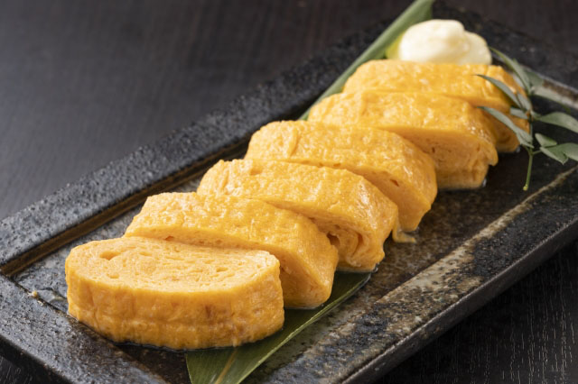

Tamagoyaki is a Japanese omelet dish made by using a unique cooking method - the eggs are folded into themselves until they are fully cooked. Although the omelette has no fillings, it is usually seasoned with sugar, mirin, and soy sauce. Tamagoyaki can often be found in bento boxes, and it is traditionally served either for breakfast or as a sushi topping.
Meal prep time : 10 minutes
Servings : 1